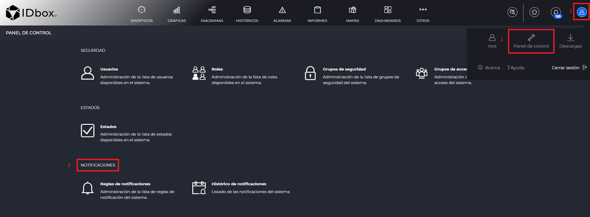
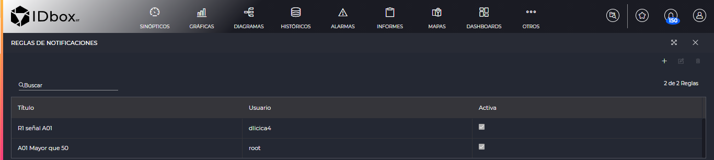
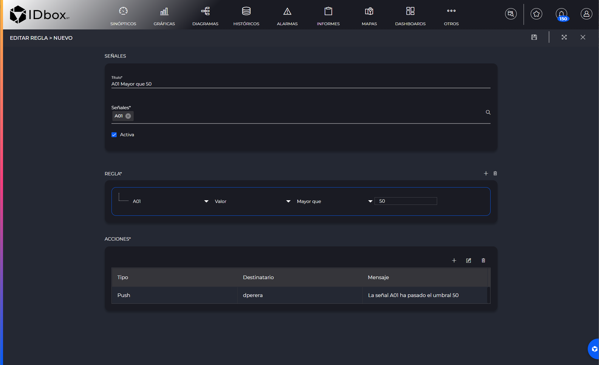
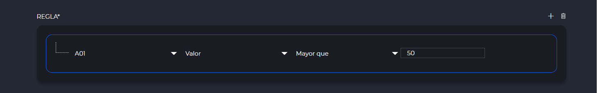
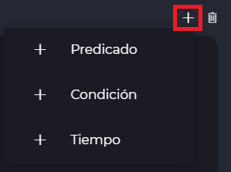
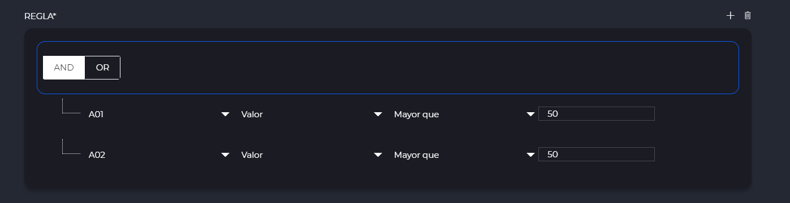
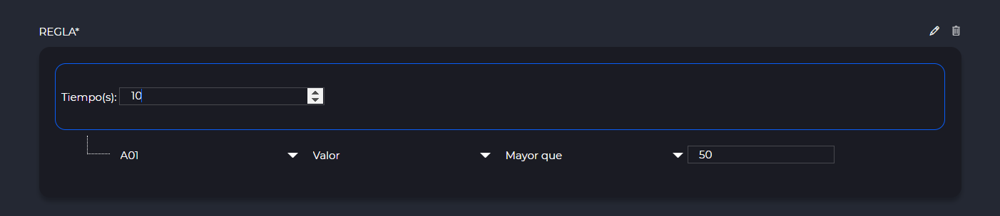
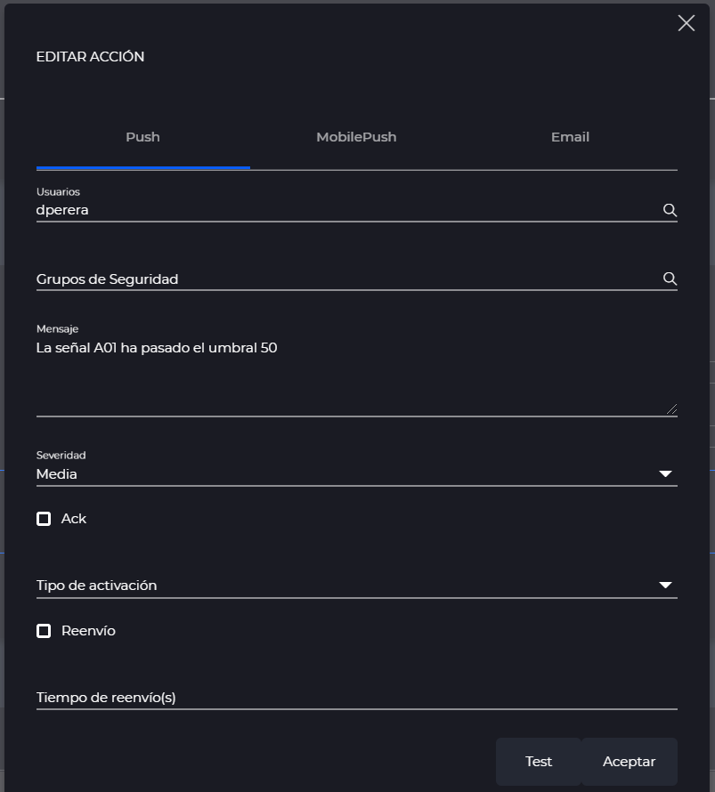
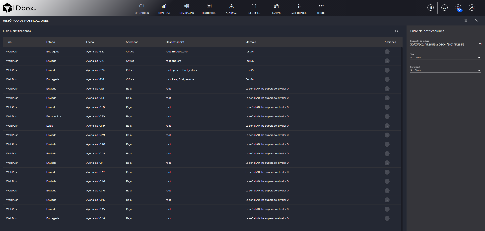
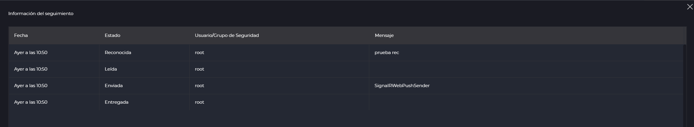

NOTIFICACIONES
- 1 Introducción
- 2 Reglas de notificaciones
- 2.1 Listado de reglas
- 2.2 Editar reglas
- 2.2.1 Regla
- 2.2.1 Acciones
- 3 Histórico de notificaciones
1 Introducción
Las notificaciones nos informarán de eventos en nuestro sistema.
Podemos encontrar la sección de notificaciones en el Panel de control.

2 Reglas de notificaciones
La sección de reglas de notificaciones nos permitirá definir las normas por las cuales recibiremos las notificaciones.
2.1 Listado de reglas
Según entremos a la sección de reglas de notificaciones, veremos un grid listando las reglas dadas de alta. Podremos utilizar el buscador para filtrar las reglas. Mediante el botón de más , podremos añadir una regla, con el , editarla y borrarla con .

2.2 Editar reglas de notificaciones
Cuando añadamos o editemos una regla, entraremos en esta sección.
Cuando finalizemos con ella podremos guardarla mediante el botón de guardar de la barra de herramientas.

En la primera sección nos encontramos los siguientes parámetros:
- Nombre: Indica el nombre de la regla.
- Señales: Aquí escogeremos las señales que formarán parte de la regla. Al pulsar sobre el campo nos abrirá el selector de señales
- Activo: Si está marcado nos llegarán las notificaciones que cumplan esta regla. En caso contrario no nos llegarán estas notificaciones.
2.2.1 Regla
En la sección “Regla” es donde definiremos el conjunto de acciones que desencadenarán que se envíe esa notificación.
La regla más básica consiste en un único operador de tipo “Predicado”. Un predicado tiene las siguientes opciones:
El primer combo indica la señal implicada en el predicado. Aquí nos aparecerán listadas todas las señales escogidas en la primera sección. En el segundo combo podremos poner si queremos hacer la regla en función del valor de esa señal o del estado de esa señal. En caso de escoger valor, podremos seleccionar en un tercer combo un operador de comparación (e.g. mayor que, mayor o igual que) y el valor que queremos comparar.
Por ejemplo en el caso de la siguiente imagen consideramos que esta regla se enviará si la señal A01 pasa el umbral de 50.

Una vez entendido el funcionamiento básico, podremos complicarlo todo lo que queramos mediante operadores de “Condición” o “Tiempo”. Esto nos formará un árbol de operadores.
Para añadir cualquier operador pulsaremos sobre un operador existente para seleccionarle y después nos aparecerán las opciones de añadir cuando pulsemos el

Para borrar cualquiera de estos operadores y todo los que cuelguen de él bastará con seleccionarle y pulsar .
El operador “Condición” nos permitirá establecer cualquier número de operadores como hijos y estos hijos podrán ser de tipo “Predicado”, “Condición” o “Tiempo”. En caso de seleccionar AND, todos los hijos deberán cumplirse para que se cumpla la condición. En caso del OR, con que se cumpla cualquiera de los hijos se cumplirá la condición.
El ejemplo de la siguiente imagen, lanzará la notificación si ambas señales A01 y A02 son mayores que 50.

Mediante el operador “Tiempo” indicaremos que enviaremos la notificación si se mantiene en el tiempo un predicado o condición durante los segundos especificados en el operador tiempo. Por lo tanto sólo podrá tener un hijo de tipo “Predicado” o “Condición”.
En el siguiente ejemplo, la notificación se lanzará cuando la señal A01 sea mayor que 50 durante 10 segundos seguidos.

2.2.2 Acciones
El grid de acciones nos permitirá definir las acciones que se ejecutarán si se envía la notificación porque se cumple la regla. Las acciones se darán de alta mediante el botón más , se editarán con y se eliminarán mediante .
Cada sistema puede tener sus propias acciones. De serie lo normal es que al menos tengamos las “Push”, “Email” y si tenemos aplicación móvil de IDbox, las “MobilePush”.

Las notificaciones de tipo “Push”, tienen los siguientes campos:
- Usuarios: Lista de usuarios a los cuales se enviará la notificación. Se pueden escribir separándoles por ‘;’ o si se pincha en la lupa , nos abrirá un selector de usuarios para que podamos seleccionar los que queramos.
- Grupos de Seguridad: Lista de grupos de seguridad a los cuales si perteneces te llegará la notificación. Se pueden escribir separándoles por ‘;’ o si se pincha en la lupa , nos abrirá un selector de grupos de seguridad para que podamos seleccionar los que queramos.
- Mensaje: Texto que se enviará en la notificación.
- Severidad: Indica la severidad de la notificación. Puede tener los valores “Trivial”, “Baja”, “Media”, “Alta” o “Crítica”
- Ack: Indica que esta notificación requerirá que se reconozca.
- Tipo de activación: Los valores posibles son “Activación”, “Desactivación” o “Cambio de estado”. Indica si la notificación se lanzará cuando se active la condición (con el valor “Activación”), cuando se desactive la condición (con el valor “Desactivación”), o si por el contrario se lanzará tanto cuando se active como cuando se desactive (con el valor “Cambio de estado”).
- Reenvio: Indica que la notificación se reenviará periódicamente si se cumple la condición.
- Tiempo de reenvío: Tiempo en segundos que pasará entre cada reenvio.
Los campos de las de tipo “MobilePush” son los mismos, pero la notificación se enviará al móvil si estamos logueados en la aplicación móvil de IDbox.
Adicionalmente puede que tengamos las notificaciones de tipo “Email”. Estas notificaciones se diferencian porque enviarán un email al usuario seleccionado en el campo “Destinatarios” y que podremos poner los campos propios de los emails: “CC”, “CCO” y “Asunto”.
El botón de “Test”, lo podemos usar para enviar una notificación de prueba sin necesidad de que se cumpla la condición.
3 Histórico de notificaciones
En esta sección podremos ver el histórico de las notificaciones del usuario logueado o las que se dirijan a cualquiera de los security groups a los que pertenezca nuestro usuario.
Según entremos veremos la última semana de datos en el grid.

A la derecha además podremos cambiar los siguientes filtros:
- Selección de fechas: Nos permitirá modificar las fechas entre las cuales consultamos los datos.
- Tipo: Nos permitirá filtrar por un tipo de notificación en concreto.
- Severidad: Filtro por la severidad de la notificación.
3.1 Seguimiento de la notificación
Si pulsamos en el grid del histórico de notificaciones sobre el botón de información , nos saldrá una ventana que nos mostrará el seguimiento de los estados por los que ha pasado la notificación.
